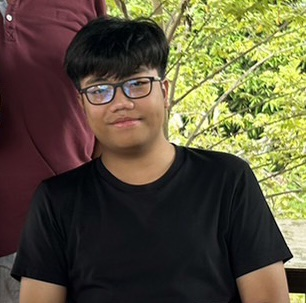

Resume

Kritsada Jantarapratak(Leo)
Fresh Graduate!
Skills
- Figma
- User Experience Design
- User Interface Design
- Interaction Design
- Information Architecture
- Prototype,Mockup,Wireframe
Experience
2019-2023
ประสบการณ์จากการเรียนคณะวิทยาลัยการปกครองท้องถิ่น สาขาการจัดการเมืองและโครงสร้างพื้นฐาน มหาวิทยาลัยขอนแก่น
- ออกแบบการใช้พื้นที่ให้เกิดประโยชน์สูงสุดสำหรับผู้ที่มาใช้บริการโดยอิงจากความหนาแน่นเพื่อสร้างความสะดวกแก่ผู้ที่เข้ามาใช้พื้นที่
- ออกแบบอาคารในบริเวณที่มีพื้นที่ว่างเพื่อนำไปเสนอแผนสร้างในอนาคต
- ออกแบบพื้นที่ใช้สอยตามปริมาณของประชากรที่อาศัยอยู่ที่แห่งนั้น เช่น ออกแบบสวนสาธารณะขนาดย่อม โดยก่อนที่จะออกแบบนั้นได้ทำการเช็คปริมาณและความต้องการของประชาชนที่อาศัยอยู่ในปัจจุบัน
- สร้างแบบแผนเพื่อปรับปรุงภูมิทัศน์และยกระดับในอนาคตบริเวณถนนรื่นรมย์
Dec 2022-March 2023
ประสบการณ์จากการฝึกสหกิจ ณ เทศบาลนครขอนแก่น ฝ่ายสำนักช่าง
- มีการสำรวจแบบแผนการก่อสร้าง
- มีการสำรวจพื้นที่ชุมชนสอบถามความต้องการที่จะสร้างหรือปรับปรุง
- มีการลงพื้นที่ไซต์ก่อสร้างเพื่อตรวจเช็คคุณภาพตามขั้นตอนเพื่อเช็คความเรียบร้อยก่อนส่งงาน
- มีการลงสำรวจพื้นที่โดยการวัดระดับเพื่อนำเข้าแผนการออกแบบ เช่น การจะสร้างอาคารติดกันจะต้องวัดความกว้างความยาวและระยะร่นของพื้นที่เพื่อนำมาคำนวณความเป็นไปได้ในการสร้าง
Education History
2019-2023
- ปริญญาตรี เทคโนโลยีบัณฑิต สาขาการจัดการเมืองและโครงสร้างพื้นฐาน มหาวิทยาลัยขอนแก่น